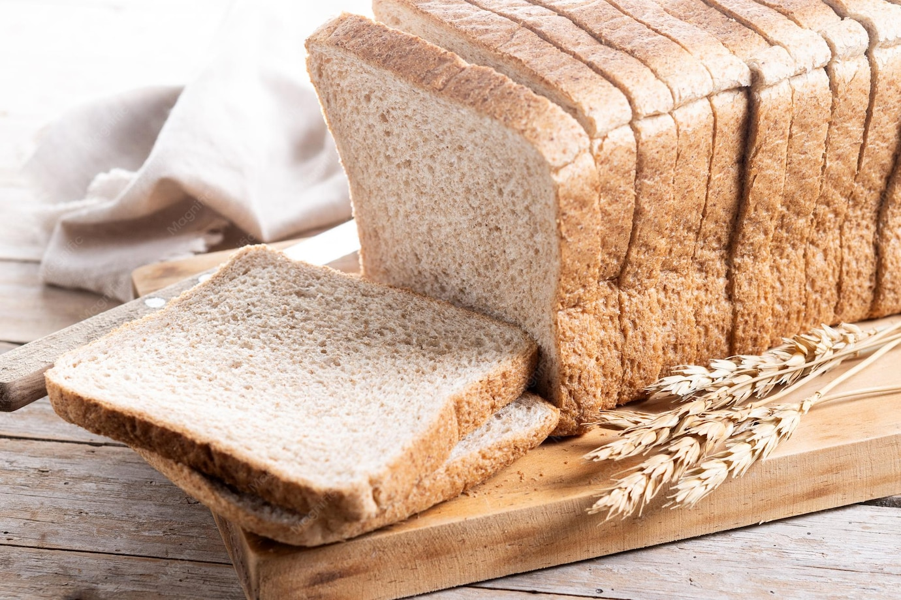

Salgados · Massas fritas/assadas
Pão integral

Ingredientes
- 3 colheres (sopa) de açúcar
- 2 tabletes (30 g) de fermento para pão
- 4 colheres (chá) de sal
- 4 xícaras de farinha integral
- 3 a 3 1/2 xícaras de farinha de trigo
- 2 1/2 xícaras de leite
- 1/3 xícara de manteiga ou margarina
- 1/3 xícara de melado
- Farinha de trigo para polvilhar
- Manteiga ou margarina para untar
Modo de preparo
- Numa tigela grande, misture o açúcar, o fermento, o sal, 2 xícaras de farinha integral e 1 xícara de farinha de trigo.
- Em outra tigela, aqueça o leite, a manteiga e o melado em fogo baixo até ficar bem quente.
- Na batedeira em velocidade baixa, vá acrescentando os líquidos aos secos. Bata em velocidade média por 2 minutos. Junte mais 1/2 xícara de farinha de trigo e bata por mais 2 minutos.
- Acrescente mais 1 1/2 xícaras de farinha integral e cerca de 1 1/2 xícaras de farinha de trigo, misturando com colher de pau.
- Sove sobre superfície enfarinhada até ficar elástica. Forme uma bola, coloque numa tigela untada, vire a massa e deixe crescer em local morno até dobrar de volume.
- Despeje sobre superfície enfarinhada, divida em duas partes e deixe descansar 15 minutos cobertas. Unte duas formas de pão de 13 × 23 cm.
- Abra cada porção em retângulo de 20 × 30,5 cm, enrole como rocambole, sele as pontas, dobre por baixo e coloque nas formas. Deixe crescer até dobrar.
- Asse em forno preaquecido em temperatura média (200 °C) por 30 a 35 minutos. Desenforme, deixe esfriar e congele.
Observação: Para saber se a massa cresceu, coloque uma bolinha de massa num copo d'água logo após prepará-la: quando subir à superfície, a massa está pronta. Congelamento: embrulhe em filme ou alumínio, coloque num saco plástico sem ar, etiquete e congele. Descongelamento: temperatura ambiente por cerca de 2 horas.